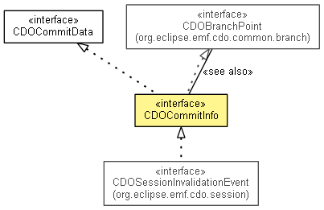

org.eclipse.emf.cdo.common.commit
Interface CDOCommitInfo
- All Superinterfaces:
- CDOBranchPoint, CDOChangeKindProvider, CDOChangeSetData, CDOCommitData, CDOTimeProvider
- All Known Subinterfaces:
- CDOCommitHistory.TriggerLoadElement, CDOSessionInvalidationEvent
- public interface CDOCommitInfo
- extends CDOBranchPoint, CDOCommitData

Commit data in the context of a commit info manager with
additional commit informations.
- Since:
- 3.0
- No Implement
- This interface is not intended to be implemented by clients.
- No Extend
- This interface is not intended to be extended by clients.
getCommitInfoManager
CDOCommitInfoManager getCommitInfoManager()
getPreviousTimeStamp
long getPreviousTimeStamp()
- Since:
- 4.0
getUserID
String getUserID()
getComment
String getComment()
isInitialCommit
boolean isInitialCommit()
- Returns
true if this commit info describes the first initializing commit in the repository, false otherwise.
- Since:
- 4.2
isCommitDataLoaded
boolean isCommitDataLoaded()
- Since:
- 4.2
Copyright (c) 2011, 2012 Eike Stepper (Berlin, Germany) and others.